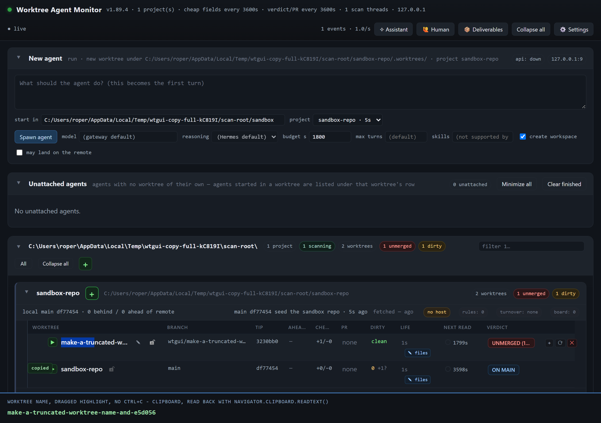
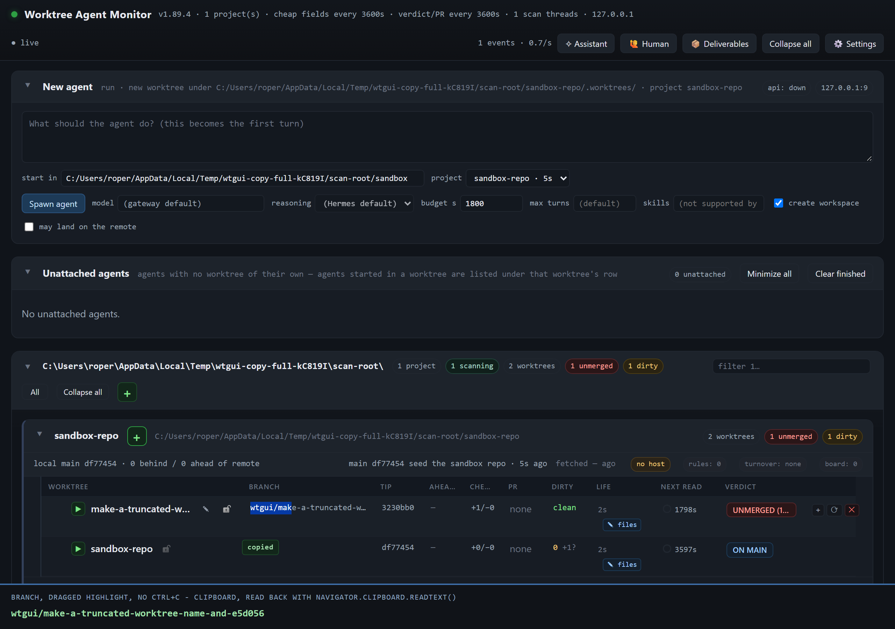

Highlighting a name or a branch on the worktree chart is now the copy
wtgui/make-highlighting-part-of-a-worktree-db6c92, landing by a
local merge into wtgui/reasoning-delta-2026-11-12. Every number and every quoted string below comes
from a run in this tree; the two pictures are frames from Chromium with the clipboard read back through
navigator.clipboard.readText().
What was asked, and where the ask landed
The chart cuts a worktree name and a branch with an ellipsis (td.name .row-name and
td.branch, public/chart.css lines 83 and 113). Selecting part of one of those cells is
how a reader takes a name out of the board, so the request was exact: a highlight on either cell must put the
whole name or branch on the clipboard, read from the row's model rather than from the cut text; the existing
copier must be extended, not duplicated; the confirmation must be visible; and the row's expand, double-click and
drag must survive it.
What PR 712 already did
public/core/copy-full-value.js in this tree was already the answer to a copy, not to a
highlight. One document-level copy listener, registered from a classic script that
public/index.html loads before app.js:
- it resolved the cell under the selection with
closest("td.name, td.branch"), and answered only when the anchor and the focus were in the same cell; - it required the cell to be truncated (
scrollWidth > clientWidthon the clipping element), so a name that fits its column kept the browser's own copy; - it took the value from the cell's
data-copy-valueattribute, whichpublic/render-projects.jsline 729 (name) and line 733 (branch) write from the row model; - it wrote that value with
event.clipboardData.setDataand cancelled the event, and did nothing at all anywhere else on the page.
So Ctrl+C after a double-click already produced the whole value. What it did not answer was the highlight itself: a reader who dragged across a name had to reach for Ctrl+C as a second gesture, and a reader who did not know the rule got the cut string from the browser. That gap is what this landing closes.
What this adds
onSelectEnd answers a settled, non-collapsed selection that lives in one
name or branch cell. The answer is the cell's whole value whether or not the column had to cut it, because a
highlight is a request for the value: half a name hands over the whole name. The copy-event path keeps 712's
truncation gate unchanged.navigator.clipboard.writeText, with the hidden-textarea path
(fallbackWrite) for a browser or a gesture the API refuses; the fallback saves and restores the
reader's ranges, so the highlight stays where it was made..copy-flash chip reading copied, appended to
document.body (never inside a row a repaint replaces), placed under the cell, removed after 1.1 s,
pointer-events: none and user-select: none so it can never take the next gesture.td.name and td.branch; only one cell at a time; no
preventDefault or stopPropagation on any mouse or key event, so expand, double-click and
drag run exactly as they did.public/app.js (line 11864), the same rule the call blocks
already follow at lines 10874 and 10926: a press that ends a drag-select is a selection, not a fold. It fires only
for detail === 1, so a double-click's second click still folds and its net effect is what it always
was, and a plain click (whose mousedown collapsed the selection) still expands.The browser proof
node tools/verify-copy-full-name.mjs boots a sandbox panel from this tree, draws one row whose name and
branch are both longer than their columns, and then does what a reader does. The two rows that matter, quoted from
the run:
| gesture | fragment the page selected | clipboard, read back with readText() |
|---|---|---|
| drag across the truncated worktree name, no Ctrl+C | "make-a-tru" - 10 of 41 chars | make-a-truncated-worktree-name-and-e5d056 |
| drag across the truncated branch, no Ctrl+C | "wtgui/mak" - 9 of 47 chars | wtgui/make-a-truncated-worktree-name-and-e5d056 |
| double-click a word of the name, no Ctrl+C | "make" | make-a-truncated-worktree-name-and-e5d056 |
| double-click a word of the branch, no Ctrl+C | "wtgui" | wtgui/make-a-truncated-worktree-name-and-e5d056 |

readText() - the whole 41-character name, while the row still draws make-a-truncated-w....

wtgui/mak, the clipboard holds
wtgui/make-a-truncated-worktree-name-and-e5d056.
The checks around it
- 34 of 34 checks pass in the real browser. Among them: the chip is up, its computed
pointer-eventsanduser-selectare bothnone, and it is gone within 4 s; the highlight is still the dragged fragment after the write; the row's expand state isfalse -> falseacross both drags; a plain click on the name expands the row and copies nothing; a second click folds it; a copy of text outside those cells is still the browser's own copy of exactly what was selected ("27f487b "came back as"27f487b "); the page threw nothing. - The same harness run against a clean archive of the commit this branch started from (7f895244) reads
25 of 34: the nine reds are exactly the new behaviour - no
.copy-flash(three checks), no whole value from a highlight (two), the drag toggling the row's fold (false -> true,true -> false), and no value from a double-click alone (two). The twenty-five that pass on the old commit include 712's own Ctrl+C cases, which is the proof this did not disturb them.
Tests and the tree they ran in
| command | what it answered |
|---|---|
node --test test/copy-full-value.test.js | 14 of 14 pass. They cover the two old cases,
712's truncation gate (still on), the highlight's whole value including a column that fits, the value coming
from the model and not the painted text, a caret / another cell / two cells answering nothing, the clipboard
write and its flash, the refused-API fallback restoring the highlight, one write per highlight, and the
listeners being registered with no stopPropagation in the module. |
npm run test:changed -- --base wtgui/reasoning-delta-2026-11-12 | 93 files, 829 tests, 823 pass, 6 fail. The six are pre-existing on the stack: the same six tests fail on a clean archive of the commit this branch started from. |
npm test | 2702 tests, 2684 pass, 18 fail, 494 s. All 18 reproduce without this change: 12 of the
13 files fail the same way on a clean git archive of the commit this branch started from, and the
thirteenth (reasoning-runs.test.js) fails 3 of 3 runs in this tree with this diff stashed - a
persist-debounce flake in lib/jobs.js, a file this diff does not touch. None of the failures names
a file this landing changed. |
The version, and why this landing carries no new number
Three numbers are in play, all read from this tree at hand-off. This branch declares 1.89.4, the number it
was cut with. origin/main moved to 1.89.5 while the work was in flight (commit
d33a6ef5, "docs: render the changelog - 572 releases"). The base this branch merges into,
wtgui/reasoning-delta-2026-11-12, also declares 1.89.5, at commit 107dc766
("chore: 1.89.5 - the version this landing carries"), and carries the annotated tag v1.89.5 there.
That is drift, not a slot for a fourth number: a bump here would put a second number on an unlanded base whose
changelog cannot be rendered until the base lands, and it would make v1.89.5 describe one branch's
commit while another branch declared the same value. So this branch adds no number, no tag and no changelog edit.
It joins the stack the base already names; the base's own landing owes a fresh number, and
node tools/version.mjs check says so in one line ("apply minor", with the reason to go in the PR
body). Withheld landings have neither tag nor changelog, which is why this one has neither.
The landing shape
The base has not landed, so the brief's own rule withheld the push: this work merges into
wtgui/reasoning-delta-2026-11-12 locally, with --no-ff from that branch's own
worktree, and creates no remote ref and no pull request. The merge commit cannot be named by a document it carries,
so it is named in the hand-off note instead.
Where the work is
public/core/copy-full-value.js - the copy path 712 wrote, and the highlight
path added above it.public/app.js line 11864 - the drag-select guard, in the shape the call
blocks already use.public/chart.css line 568 - .copy-flash and its one animation.public/render-projects.js lines 729 and 733, with the comment
corrected to name the highlight as a trigger.public/index.html, whose comment now says what the module answers.test/copy-full-value.test.js, and the browser gate
tools/verify-copy-full-name.mjs with its captures under
docs/assets/copy-full-highlight/.